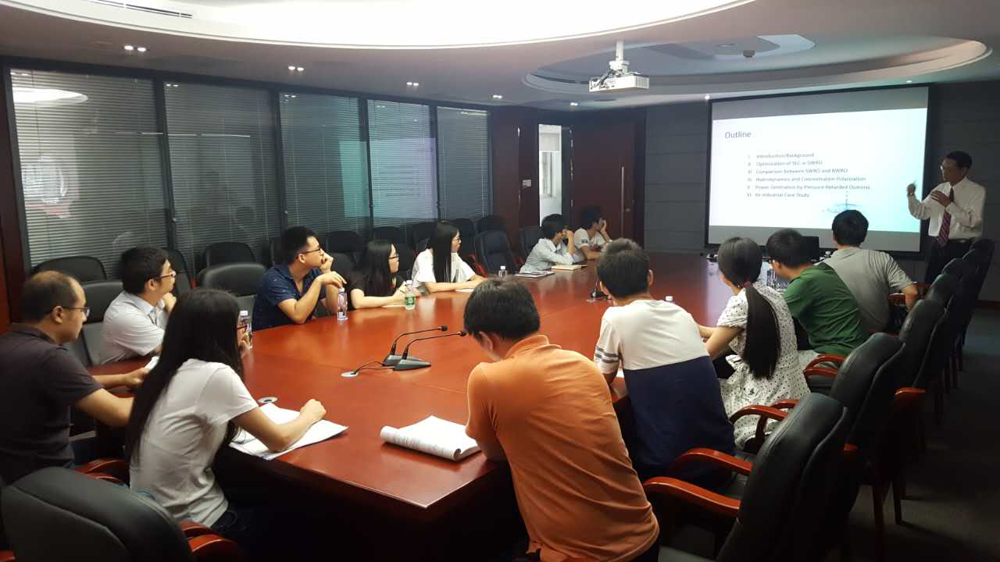
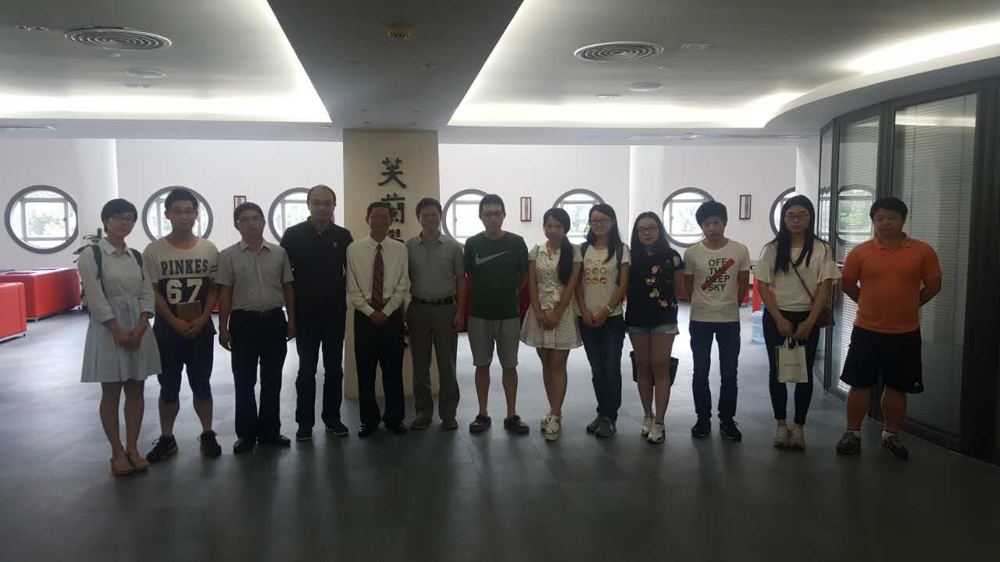

CSS目前最新版本为CSS3，是能够真正做到网页表现与内容分离的一种样式设计语言。 相对于传统HTML的表现而言，CSS能够对网页中的对象的位置排版进行像素级的精确控制， 支持几乎所有的字体字号样式，拥有对网页对象和模型样式编辑的能力， 并能够进行初步交互设计，是目前基于文本展示最优秀的表现设计语言。 CSS能够根据不同使用者的理解能力，简化或者优化写法，针对各类人群，有较强的易读性。
CSS目前最新版本为CSS3，是能够真正做到网页表现与内容分离的一种样式设计语言。 相对于传统HTML的表现而言，CSS能够对网页中的对象的位置排版进行像素级的精确控制， 支持几乎所有的字体字号样式，拥有对网页对象和模型样式编辑的能力， 并能够进行初步交互设计，是目前基于文本展示最优秀的表现设计语言。 CSS能够根据不同使用者的理解能力，简化或者优化写法，针对各类人群，有较强的易读性。
2016年9月16日上午，学院邀请加州理工州立大学的李明恒教授以“Systems Engineering in Osmotically Driven Membrane Processes”为题目举行学术报告。 会议由何畅副教授主持，我院陈清林教授、衡益副教授、莫冬传讲师等教师，以及博士生、硕士生到场听取报告。

李明恒教授系统性的总结了近十年来其研究团队在SWRO（海水反渗透过滤）、 BWRO（地下水反渗透过滤）和PRO（压力阻尼渗透过滤）等关键领域的模型求解与优化工作的进展成果，特别是对浓差极化等影响因素进行了详细的讲解， 最后基于美国加州某BWRO工厂运行数据对模型进行了验证和分析。李教授的报告深入浅出，讲解细致， 在座的师生们受益匪浅。当天下午，李教授还与参会教师和同学们进行了深入的探讨， 就报告中的问题及时解答疑惑。整个讨论过程精彩纷呈，气氛活跃，研究生积极参与讨论。 此次报告帮助与会研究生们拓宽了视野、提高了自身知识水平，同时对进一步提高我院科研实力水平有着积极的作用
